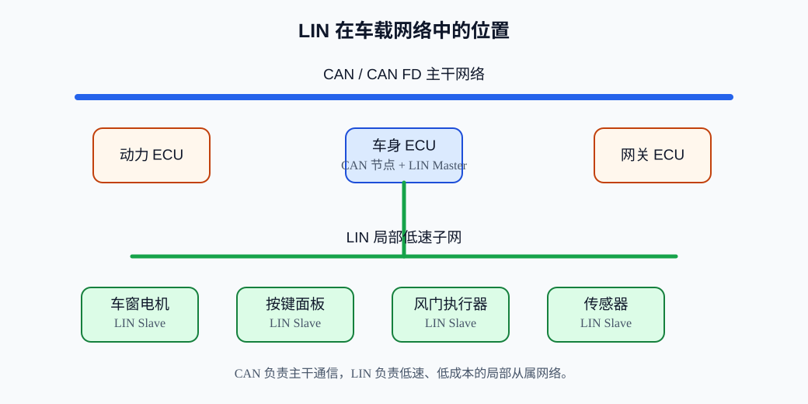
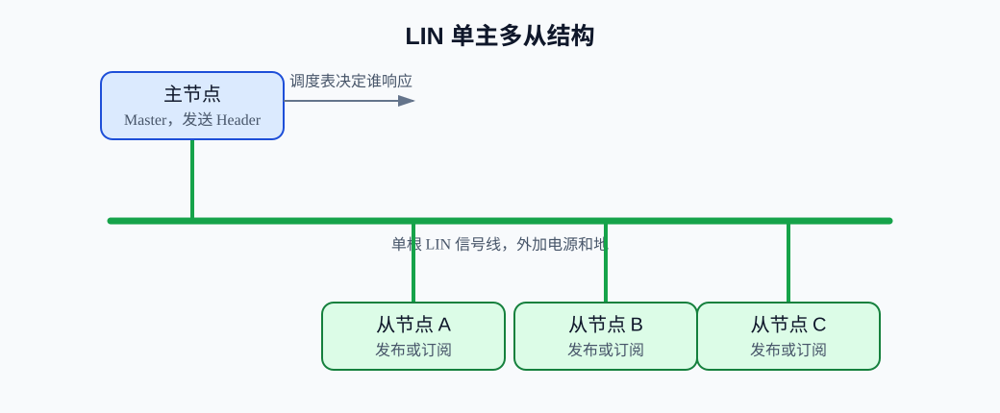
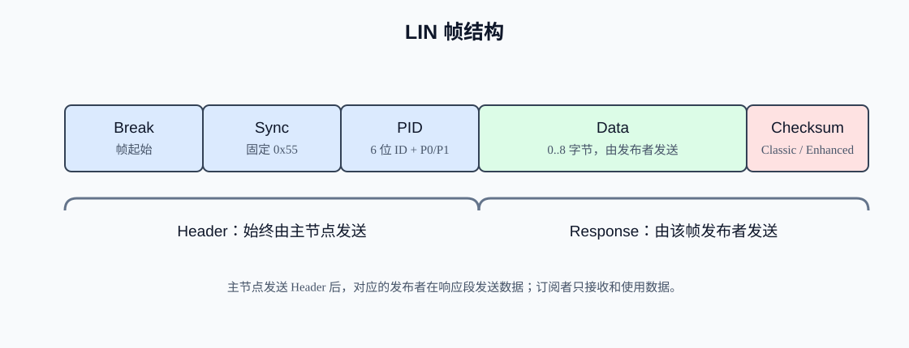
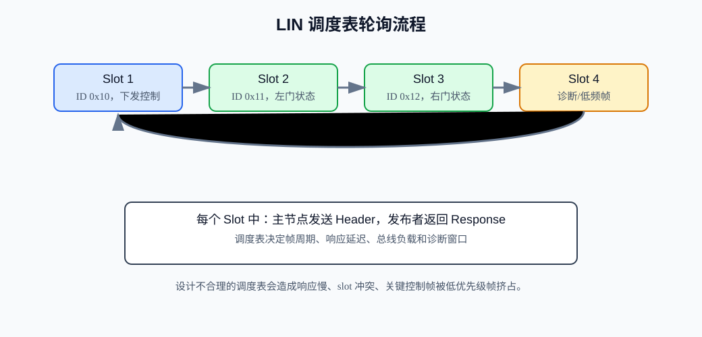
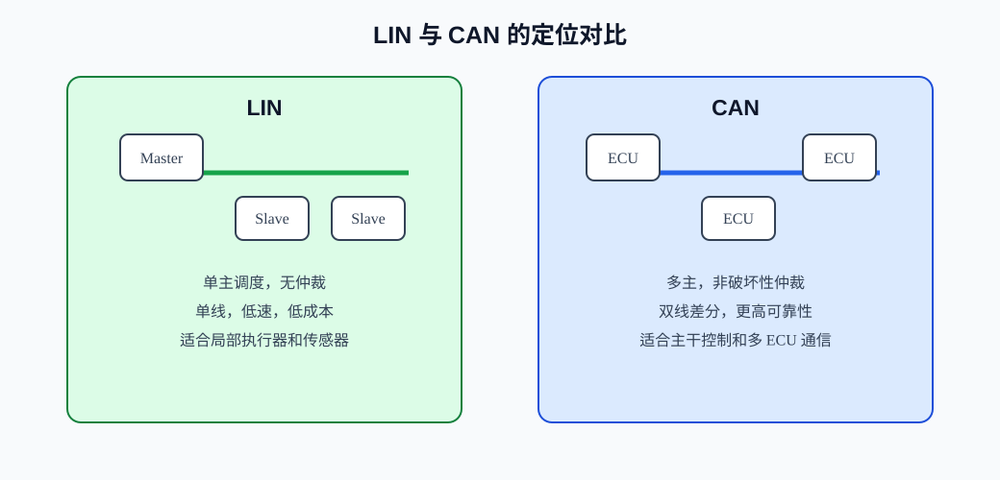

LIN¶
LIN 是 Local Interconnect Network 的缩写，常翻译为本地互连网络。它是一种面向低成本、低速、车身局部控制场景的串行通信协议，典型用途是把车门、车窗、座椅、空调风门、雨量传感器、方向盘按键、后视镜、天窗等“数量多、数据量小、实时性要求中等”的节点接入整车网络。
一句话理解 LIN：它不是“低配版 CAN”，而是专门为低成本从属网络设计的主从式单线总线。它常常和 CAN 配合使用：CAN 负责整车主干和高可靠多主通信，LIN 负责局部低速执行器和传感器的低成本接入。
1. LIN 概述：为什么会有 LIN¶
在汽车电子里，并不是每一个执行器都值得接一颗 CAN 收发器和完整 CAN 控制器。比如一个车窗开关、一个小电机、一个温度风门执行器，数据量很小，通信周期也不高。如果全部使用 CAN，成本、线束、软件复杂度都会上升。
LIN 要解决的问题主要是：
- 降低节点硬件成本。
- 减少线束数量，使用单根信号线加电源和地。
- 让简单从节点可以用普通 UART/USART 外设参与通信。
- 用主节点统一调度，避免多节点争用总线。
- 在不需要 CAN 那么高性能的地方，提供足够可靠的低速通信。
LIN 的典型特征：
| 特征 | 说明 |
|---|---|
| 单主多从 | 一个主节点控制总线时序，多个从节点被动响应。 |
| 单线通信 | LIN 总线是一根信号线，通常还需要电源和地。 |
| 低速 | 常见速率最高约 20 kbit/s，工程中也常见 9.6 kbit/s、19.2 kbit/s。 |
| 低成本 | 从节点通常不需要晶振级高精度时钟，可通过 Sync 字段同步。 |
| 确定性调度 | 主节点按调度表发送帧头，决定什么时候通信。 |
| 基于 UART | 字节层面类似异步串口，但 LIN 有额外帧格式和协议规则。 |
2. LIN 在车载网络中的位置¶
LIN 常作为 CAN、CAN FD、FlexRay、Automotive Ethernet 等主干网络下面的局部子网。主控 ECU 既可以是 CAN 节点，也可以是某条 LIN 支路的主节点。

常见结构是：
- 车身控制器 BCM 接入 CAN 主干。
- BCM 同时作为多个 LIN 子网的主节点。
- 每条 LIN 子网上挂多个低成本从节点。
- 从节点只负责自己的局部功能，比如读取按键、驱动小电机、上报状态。
所以 LIN 与 CAN 的关系不是互相替代，而是分工协作：
- CAN 更适合多主、较高带宽、强实时、复杂控制。
- LIN 更适合低速、低成本、主节点集中调度的局部功能。
3. LIN 与 UART、CAN 的关系¶
初学者最容易把 LIN、UART、CAN 放在同一层比较。实际上它们不完全是同一层概念。
| 项目 | UART/USART | LIN | CAN |
|---|---|---|---|
| 定位 | MCU 串口外设/异步串行通信方式 | 基于单线串行的车载局部网络协议 | 多主差分总线通信协议 |
| 物理层 | TTL 串口、RS-232、RS-485 等都可承载 | LIN 收发器，单线总线 | CAN 收发器，CAN_H/CAN_L 差分 |
| 拓扑 | 通常点对点，或借助外部总线 | 单主多从 | 多主多节点 |
| 仲裁 | 无协议级仲裁 | 不需要仲裁，主节点调度 | 非破坏性位仲裁 |
| 帧结构 | 起始位、数据位、校验位、停止位 | Break、Sync、PID、Data、Checksum | SOF、ID、控制、数据、CRC、ACK、EOF |
| 典型速率 | 取决于硬件 | 最高约 20 kbit/s |
Classical CAN 最高 1 Mbit/s |
| 典型场景 | 调试口、模块间简单通信 | 车身局部低速节点 | 车身、动力、底盘、工业控制 |
可以这样理解：
- UART 是发送和接收字节的基础硬件能力。
- LIN 借用了 UART 的异步字节格式，但定义了总线电平、帧结构、主从调度、PID、校验、诊断等规则。
- CAN 不依赖 UART，它有自己的控制器、收发器、仲裁和错误处理机制。
因此，LIN 不是“裸 UART 加几个字节”。一个 LIN 节点除了能收发串口字节，还要理解 Break、Sync、PID、调度表、checksum 和诊断等协议行为。
4. 典型应用场景¶
LIN 常用于“一个主控 ECU 管理一组简单外设”的场景。
典型例子：
- 车门模块：车窗升降、门锁、后视镜调节、按键面板。
- 座椅模块：座椅位置电机、加热、通风、记忆位置。
- 空调系统：风门执行器、鼓风机控制、温度传感器。
- 方向盘：按键、加热、局部传感器。
- 雨刮和灯光：雨量传感器、光照传感器、局部执行器。
- 电池和充电相关低速辅助节点。
这些节点通常有共同特点：
- 数据量小。
- 节点成本敏感。
- 不需要多个节点自由竞争总线。
- 对实时性有要求，但不是微秒级。
- 线束空间和成本很重要。
5. 单总线、低成本、低速通信¶
LIN 物理层通常是一根 LIN 信号线，配合电源和地。总线空闲时为隐性状态，通信时通过主从节点的 LIN 收发器拉动总线电平。
工程上需要注意：
- LIN 是单线通信，不是 CAN 那样的双线差分通信。
- LIN 抗干扰能力和速度不如 CAN，因此不适合高带宽或强实时主干网络。
- LIN 支路通常较短，节点数量有限。
- LIN 从节点常通过主节点发送的 Sync 字段校准波特率，因此可以降低从节点时钟成本。
- 低成本不等于“随便接线”。车载环境里仍要考虑 EMC、ESD、浪涌、休眠唤醒和地偏移。
LIN 规范和实际芯片资料中会给出物理层、电压、电流、斜率控制、睡眠唤醒等要求。具体数值要以目标 LIN 收发器数据手册和整车厂规范为准。
6. 主节点、从节点、发布者、订阅者¶
LIN 使用一个主节点和多个从节点。

6.1 主节点 Master¶
主节点负责：
- 维护调度表。
- 周期性发送帧头 Header。
- 决定总线上什么时候出现哪一个帧。
- 管理诊断、配置、休眠和唤醒。
- 通常作为 LIN 子网与 CAN 主干之间的网关。
主节点不一定总是数据发送者。它发送帧头后，响应部分可能由主节点自己发送，也可能由某个从节点发送。
6.2 从节点 Slave¶
从节点负责：
- 监听主节点发送的 Header。
- 根据 PID 判断自己是否需要响应或接收数据。
- 在被调度到时发布数据。
- 接收属于自己的控制数据。
- 上报错误状态或诊断信息。
从节点不能随意抢占总线。没有主节点帧头，从节点通常不会主动发送完整 LIN 帧。
6.3 发布者 Publisher 与订阅者 Subscriber¶
LIN 里一个帧可以看成一个“信号容器”。某个节点负责发布这个帧中的数据，其他一个或多个节点订阅这个帧的数据。
- 发布者：在该 PID 对应的响应段中发送 Data 和 Checksum。
- 订阅者：接收并使用该 PID 对应的数据。
例如：
- 主节点发送 PID
0x12的帧头。 - 左车门从节点是该帧发布者，返回车窗位置。
- 主节点和其他相关节点订阅这个帧，更新状态。
这种发布/订阅关系通常由 LDF 文件或项目通信矩阵描述。
7. LIN 通信的整体工作方式¶
LIN 的一次通信通常由两部分组成：
- Header：主节点发送。
- Response：发布者发送，可能是主节点，也可能是某个从节点。
也就是说，LIN 总线上的“谁能说话”由主节点帧头决定。
典型过程：
- 主节点按照调度表选择下一个帧。
- 主节点发送 Break。
- 主节点发送 Sync
0x55。 - 主节点发送 PID。
- 对应发布者发送 0 到 8 字节 Data。
- 发布者发送 Checksum。
- 所有订阅者接收并校验数据。
- 主节点等待该帧 slot 结束，进入下一个调度项。
这个机制使 LIN 天然具有确定性：只要调度表设计合理，什么时候读谁、什么时候写谁都是可预期的。
8. LIN 帧结构详解¶
LIN 帧由 Header 和 Response 组成。

Header: Break + Sync + PID
Response: Data[0..8] + Checksum
8.1 Break¶
Break 是 LIN 帧的起始标志，由主节点发送。它是一段比普通 UART 字符更长的显性低电平。
作用：
- 通知所有从节点：新帧开始。
- 让从节点从普通字节流中重新同步到 LIN 帧边界。
- 唤起处于等待接收状态的 LIN 协议解析逻辑。
在 MCU 上实现 LIN Master 时，Break 不能简单理解为发送普通字节。很多带 LIN 功能的 UART/USART 外设可以自动产生 Break；如果没有硬件支持，也可能需要临时调整波特率或手动控制 TX，但这属于常见做法，不一定所有芯片完全一致。
8.2 Sync¶
Sync 字段固定为 0x55，二进制为：
0101 0101
它的边沿分布均匀，方便从节点测量位宽并校准自己的波特率。
这就是 LIN 能降低从节点时钟成本的重要原因之一：从节点不一定需要高精度晶振，可以在每帧 Sync 字段上重新同步。但工程上仍要保证从节点内部时钟误差、温漂和软件延迟满足目标网络要求。
8.3 PID¶
PID 是 Protected Identifier，受保护标识符。它不是普通裸 ID，而是：
PID = ID[0..5] + P0 + P1
其中：
- ID 是 6 位帧标识符，范围
0..63。 - P0 和 P1 是两个奇偶校验位。
- PID 总共 8 位。
PID 的作用：
- 标识当前帧是什么。
- 让从节点判断自己是否需要发布或订阅。
- 通过奇偶校验位检测 PID 本身的部分错误。
8.4 Data¶
Data 是响应数据，长度通常为 1..8 字节，也可能有特殊帧使用不同语义。某个 PID 的数据长度和信号布局通常在 LDF 或项目文档中固定。
LIN 数据里可以承载：
- 开关状态。
- 传感器值。
- 执行器目标位置。
- 电机状态。
- 错误标志。
- 诊断数据。
8.5 Checksum¶
Checksum 是响应段末尾的校验字节，用来检查 Data 或 PID+Data 是否传输正确。
LIN 有两种常见 checksum：
- Classic Checksum。
- Enhanced Checksum。
后面会单独展开。
9. PID 的组成与奇偶校验¶
LIN 的帧 ID 只有 6 位，记为：
ID0 ID1 ID2 ID3 ID4 ID5
PID 还包含两个奇偶校验位：
P0 = ID0 xor ID1 xor ID2 xor ID4
P1 = not(ID1 xor ID3 xor ID4 xor ID5)
最终 PID 位布局可以理解为：
bit0..bit5 = ID0..ID5
bit6 = P0
bit7 = P1
示例：ID = 0x12。
ID = 0x12 = 0b010010
ID0=0, ID1=1, ID2=0, ID3=0, ID4=1, ID5=0
P0 = 0 xor 1 xor 0 xor 1 = 0
P1 = not(1 xor 0 xor 1 xor 0) = not(0) = 1
PID = 0b10010010 = 0x92
所以抓包里看到的 PID 可能是 0x92，但它对应的 6 位 ID 是 0x12。这就是“PID 不等于普通裸 ID”的核心。
常见保留 ID：
0x3C：诊断请求帧，Master Request Frame。0x3D：诊断响应帧，Slave Response Frame。0x3E、0x3F：保留用于扩展。
工程中描述帧时要说清楚“ID”还是“PID”。如果工具显示 PID，可能已经包含奇偶位；如果工具显示 Frame ID，可能只是 6 位 ID。
10. Classic Checksum 与 Enhanced Checksum¶
LIN 的 checksum 是 8 位反码和校验。计算时对参与校验的字节求和，处理进位回卷，最后取反得到 checksum。
10.1 Classic Checksum¶
Classic Checksum 只覆盖 Data 字节，不包含 PID。
Classic Checksum = inverted sum(Data bytes)
它主要用于早期 LIN 版本兼容，也用于诊断相关帧。
10.2 Enhanced Checksum¶
Enhanced Checksum 覆盖 PID 和 Data。
Enhanced Checksum = inverted sum(PID + Data bytes)
它比 Classic 更强一些，因为 PID 也参与校验，可以发现更多错误。
10.3 使用区别¶
常见规则：
- LIN 1.x 设备常使用 Classic Checksum。
- LIN 2.x 的普通信号帧通常使用 Enhanced Checksum。
- 诊断帧
0x3C、0x3D通常仍使用 Classic Checksum。
这是常见做法，不一定所有设备完全一致。实际项目中要看 LIN 版本、LDF 文件、从节点数据手册和整车厂通信规范。
11. LIN 帧类型¶
LIN 中常见帧类型包括无条件帧、事件触发帧、偶发帧、诊断帧、用户定义帧等。初学者先掌握下面几类即可。
11.1 无条件帧 Unconditional Frame¶
无条件帧是最常用的帧。
特点：
- 调度表到时间就发送 Header。
- 固定发布者在 Response 中返回数据。
- 订阅者接收并使用。
例如主节点每 20 ms 读取车窗位置，每 100 ms 读取按键状态。
11.2 事件触发帧 Event Triggered Frame¶
事件触发帧用于减少总线负载。多个从节点可能关联到同一个事件触发帧，当没有事件时可以不响应；当某个节点有事件时，它响应。
需要注意：
- 如果多个从节点同时响应，会发生冲突。
- 主节点检测到冲突后，需要通过后续无条件帧逐个查询具体哪个节点有事件。
- 事件触发帧适合低频事件，不适合所有高频周期数据。
11.3 诊断帧 Diagnostic Frame¶
诊断帧用于节点配置、诊断服务、读写标识信息等。常见保留 ID：
0x3C：Master Request。0x3D：Slave Response。
诊断帧常用于：
- 节点寻址。
- 读取产品标识。
- 配置 NAD。
- 传输诊断服务数据。
LIN 诊断和汽车诊断协议体系相关，实际项目中可能涉及 UDS on LIN、NAD、PCI、SID 等概念。初学阶段先理解：LIN 诊断也是通过主节点调度的特殊帧完成，不是从节点自由发送。
11.4 用户定义帧 User-defined Frame¶
用户定义帧用于项目自定义的数据传输。它的含义由系统设计者决定。
使用时要注意：
- 避免和诊断、保留 ID 冲突。
- 在 LDF 或通信矩阵中明确数据长度、信号位置、checksum 类型。
- 保证所有订阅者对数据解释一致。
12. 调度表 Schedule Table¶
调度表是 LIN 的核心。没有调度表，LIN 就失去了“主节点统一安排总线时间”的优势。

调度表描述：
- 发送哪个帧头。
- 每个帧的 slot 时间。
- 帧的周期。
- 不同工作模式下切换哪张表。
- 诊断帧、事件帧、普通周期帧如何穿插。
一个简化调度表示例：
| 顺序 | 帧 ID | 帧用途 | 周期/slot | 发布者 |
|---|---|---|---|---|
| 1 | 0x10 |
主节点下发车窗目标位置 | 10 ms | 主节点 |
| 2 | 0x11 |
左车窗状态反馈 | 10 ms | 左车窗从节点 |
| 3 | 0x12 |
右车窗状态反馈 | 10 ms | 右车窗从节点 |
| 4 | 0x20 |
按键状态 | 20 ms | 按键从节点 |
| 5 | 0x3C |
诊断请求 | 100 ms 或按需 | 主节点 |
| 6 | 0x3D |
诊断响应 | 100 ms 或按需 | 从节点 |
调度设计要考虑：
- 高频控制数据放在短周期。
- 慢速状态、版本信息、诊断信息放在长周期或按需表。
- 每个 slot 要留足响应时间、处理时间和容差。
- 不能让低优先级诊断长期阻塞关键控制帧。
- 不同模式可以使用不同调度表，例如正常运行表、诊断表、休眠准备表。
13. 时间同步机制¶
LIN 从节点通常通过 Sync 字段进行同步。主节点发送的 Sync 字段固定为 0x55，从节点测量边沿间隔，估算当前帧的位时间。
这个机制解决了低成本从节点的时钟精度问题：
- 从节点可以使用内部 RC 振荡器。
- 每次 Header 都有重新同步机会。
- 从节点不需要像 CAN 那样参与复杂位仲裁。
但工程中仍要注意：
- 主节点波特率必须稳定。
- 从节点同步算法和 UART 采样误差要满足规范要求。
- 若 Break 或 Sync 波形质量差，从节点可能无法正确识别帧。
- 如果总线干扰导致
0x55错误，后续 PID 和数据也可能全部解析失败。
14. 诊断与配置基本思路¶
LIN 诊断通常围绕主节点和从节点的诊断帧进行。
常见概念：
- NAD，Node Address for Diagnostic，诊断节点地址。
- Supplier ID、Function ID、Variant，用于识别从节点产品信息。
- Master Request Frame，主节点诊断请求。
- Slave Response Frame，从节点诊断响应。
常见用途：
- 给从节点分配或配置 NAD。
- 读取从节点产品标识。
- 读取软件版本、硬件版本。
- 查询故障状态。
- 执行简单诊断服务。
基本思路：
- 主节点切换到诊断调度表或插入诊断帧。
- 主节点通过
0x3C发送诊断请求。 - 目标从节点在
0x3D对应响应机会中返回诊断响应。 - 主节点解析响应并决定是否继续请求。
诊断功能在不同 LIN 版本、整车厂规范和芯片栈中可能有实现差异。做项目时不要只凭通用教程写死流程，要以 LDF、节点数据手册和项目诊断规范为准。
15. LIN 与 CAN 的配合关系¶

在整车中，常见组合方式是：
- CAN 连接多个 ECU，承担车身、动力、底盘、诊断等主干通信。
- 某个 ECU 作为 LIN Master，管理一条或多条 LIN 支路。
- LIN 从节点只处理局部简单任务。
- 主 ECU 把 LIN 从节点信息汇总后，再通过 CAN 上报给其他 ECU。
例如：
- 车门按键从节点通过 LIN 把按键状态发给车门控制器。
- 车门控制器判断是否允许升窗。
- 车门控制器通过 LIN 下发电机控制命令。
- 必要时车门控制器再通过 CAN 把状态上报给车身控制器。
这种结构让 CAN 主干保持清晰，低成本节点通过 LIN 接入，不必每个小节点都挂 CAN。
16. LIN 的优点、局限性和适用边界¶
16.1 优点¶
- 成本低：从节点硬件和软件复杂度低。
- 线束简单：单线总线适合局部网络。
- 调度确定：主节点统一安排通信。
- 容易接入 MCU：很多 MCU 的 UART/USART 支持 LIN Break 检测或 LIN 模式。
- 适合休眠唤醒：车载低功耗场景常用。
- 与 CAN 互补：适合做 CAN 主干下面的低速子网。
16.2 局限性¶
- 速度低，不适合大数据量。
- 单主机制，主节点故障会影响整条 LIN 子网。
- 从节点不能自由抢占总线。
- 错误处理能力不如 CAN 完整。
- 单线通信抗干扰和带宽不如 CAN 差分总线。
- 调度表设计不好会导致延迟大、总线利用率低。
16.3 适用边界¶
适合 LIN：
- 低速传感器。
- 简单执行器。
- 周期状态读取。
- 局部车身控制。
- 成本敏感从节点。
不适合 LIN：
- 高速数据采集。
- 多主实时控制。
- 强安全关键闭环控制。
- 节点需要随时主动上报大量数据。
- 需要复杂错误隔离和高带宽的主干通信。
17. 常见调试方法与排障思路¶
17.1 先看物理层¶
检查项：
- LIN 线、电源、地是否连接正确。
- 是否使用 LIN 收发器，而不是直接把 MCU UART TX/RX 接到总线。
- 主节点和从节点供电电压是否正常。
- 总线空闲电平是否正常。
- 是否有短路、断路、地偏移、干扰。
- 收发器是否处于睡眠、待机或正常模式。
调试工具：
- 示波器：看 Break、Sync、PID、响应波形。
- 逻辑分析仪：解码 UART/LIN 字节。
- LIN 分析仪：直接解析 PID、checksum、帧类型、错误。
17.2 再看 Header¶
如果从节点完全不响应，优先看：
- Break 是否足够长。
- Sync 是否为
0x55。 - 波特率是否正确。
- PID 是否正确，奇偶位是否正确。
- 主节点是否发送了从节点订阅的 ID。
- 从节点是否已经唤醒并进入正常通信状态。
17.3 再看 Response¶
如果能看到响应但主节点认为错误：
- Data 长度是否和 LDF 定义一致。
- Checksum 类型是否选错，Classic 与 Enhanced 是否混用。
- 诊断帧是否错误使用 Enhanced Checksum。
- 从节点响应时间是否超过 slot。
- 多个从节点是否错误配置为同一个帧的发布者。
17.4 再看调度表¶
很多 LIN 问题不是字节错，而是调度错：
- 帧周期过长，应用层觉得响应慢。
- slot 时间过短，从节点还没发完就进入下一帧。
- 诊断表切换后忘记切回正常表。
- 事件触发帧冲突后没有用无条件帧解析冲突。
- 低优先级帧太多，挤占关键控制帧。
17.5 常见错误现象¶
| 现象 | 可能原因 |
|---|---|
| 总线一直高电平 | 没有发送、收发器睡眠、主节点未启动。 |
| Break 有但无响应 | PID 不匹配、从节点未唤醒、波特率不同、供电异常。 |
| Sync 解码不稳定 | 波特率误差、波形质量差、采样设置错误。 |
| 偶发 checksum 错 | 干扰、checksum 类型错、数据长度错。 |
| 多个节点同时响应 | LDF 配置错误，多个发布者冲突。 |
| 诊断不通 | NAD 错、诊断调度表错误、0x3C/0x3D 处理不完整。 |
18. 工程实践建议¶
18.1 节点设计¶
主节点建议：
- 使用稳定时钟源，保证波特率精度。
- 使用 LIN 收发器，正确控制睡眠和唤醒。
- 明确维护一张或多张调度表。
- 记录每个从节点的响应超时、checksum 错、通信丢失次数。
- 作为 CAN-LIN 网关时，做好信号刷新、超时替代值和故障上报。
从节点建议：
- 使用硬件 LIN Break 检测功能，减少软件误判。
- PID 先校验奇偶位，再判断 ID。
- 严格按 LDF 定义的数据长度和 checksum 类型响应。
- 只在自己是发布者时发送 Response。
- 对关键输出设置超时保护：长期收不到主节点控制帧时进入安全状态。
18.2 调度设计¶
建议：
- 把控制闭环相关帧放到高频调度。
- 把版本号、配置、诊断放到低频或按需调度。
- 对每个 slot 预留足够响应时间。
- 避免总线利用率长期接近满载。
- 对事件触发帧准备冲突解析策略。
- 为诊断通信设计独立调度表或诊断窗口。
18.3 错误处理¶
主节点应记录：
- 无响应。
- PID 奇偶错误。
- Checksum 错误。
- 数据长度错误。
- 响应超时。
- 总线物理错误。
从节点应处理：
- Break 错误或帧同步失败。
- PID 奇偶错误。
- 不属于自己的帧。
- 主节点长期未调度。
- 控制命令超时。
错误处理建议：
- 通信偶发失败不要立即进入永久故障。
- 连续失败达到阈值后再上报故障。
- 对执行器输出要定义通信丢失后的安全状态。
- 调试阶段保留错误计数器和最近错误帧，方便定位问题。
18.4 主从职责划分¶
LIN 网络设计时要保持主从职责清晰：
- 主节点负责“什么时候通信”。
- 从节点负责“被问到时提供或接收自己的数据”。
- 主节点负责诊断、配置和调度切换。
- 从节点不要设计成必须主动抢占总线才能保证功能。
如果某个从节点必须随时主动上报高实时事件，LIN 可能不是最合适的协议。可以考虑 CAN，或者在 LIN 中用更短周期轮询、事件触发帧等方式折中。
19. 与 USART / CAN 的简要对比¶
| 维度 | USART 裸串口 | LIN | CAN |
|---|---|---|---|
| 是否定义完整网络协议 | 否 | 是 | 是 |
| 是否有主从调度 | 无，需自定义 | 有，主节点调度 | 无固定主节点，多主仲裁 |
| 是否适合多节点 | 裸串口不适合，需要外部协议和硬件 | 适合低速单主多从 | 适合多主多节点 |
| 帧校验 | 可选奇偶校验，应用层自定义 | Checksum | CRC + ACK + 错误机制 |
| 成本 | 很低 | 低 | 较高 |
| 复杂度 | 低，但协议要自己做 | 中等 | 较高 |
| 适合场景 | 调试口、简单点对点 | 车身局部低速网络 | 车载/工业主干通信 |
如果你已经学过 USART，可以把 LIN 理解为：在 UART 字节传输能力之上，增加了车载单线物理层、主从调度、固定帧头、PID 保护、checksum、诊断和配置规则。
如果你已经学过 CAN，可以把 LIN 理解为：牺牲带宽、多主仲裁和复杂错误处理，换取低成本、简单从节点和确定的主控调度。
20. 初学者常见误区¶
20.1 LIN 是低配版 CAN¶
不准确。LIN 与 CAN 的设计目标不同。CAN 是多主差分总线，强调仲裁、错误处理和较高实时性；LIN 是低成本单主从属网络，强调主节点调度和简单节点。
20.2 LIN 就是 UART¶
不准确。LIN 使用类似 UART 的异步字节格式，但它还定义了 Break、Sync、PID、Data、Checksum、调度表、诊断和物理层要求。
20.3 PID 就是 ID¶
不准确。ID 是 6 位，PID 是 8 位，包含 ID 和两个奇偶校验位。抓包工具显示 PID 时，要注意它可能不是 LDF 中写的 6 位 Frame ID。
20.4 从节点可以随时发送¶
一般不可以。LIN 从节点通常必须等主节点发送对应 Header 后，才能在响应段发送数据。
20.5 调度表只是软件实现细节¶
不是。调度表决定总线时序、响应延迟和总线负载，是 LIN 网络设计的核心。
20.6 checksum 错一定是线路干扰¶
不一定。checksum 错也可能是 Classic/Enhanced 类型选错、PID 错、数据长度错、诊断帧规则错或软件计算范围错。
21. 学习路线¶
建议按下面顺序学习和实践：
- 用示波器或逻辑分析仪观察 Break、Sync
0x55、PID。 - 手工计算一个 ID 的 PID 奇偶位。
- 手工计算 Classic 和 Enhanced Checksum。
- 用 MCU UART 接 LIN 收发器，实现一个只订阅单个帧的从节点。
- 增加发布响应能力，按 PID 返回固定数据。
- 增加主节点调度表，周期轮询多个帧。
- 加入超时、checksum 错误计数、从节点离线检测。
- 再学习诊断帧、NAD、LDF 和 CAN-LIN 网关。